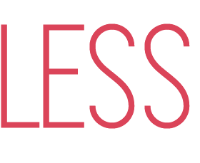
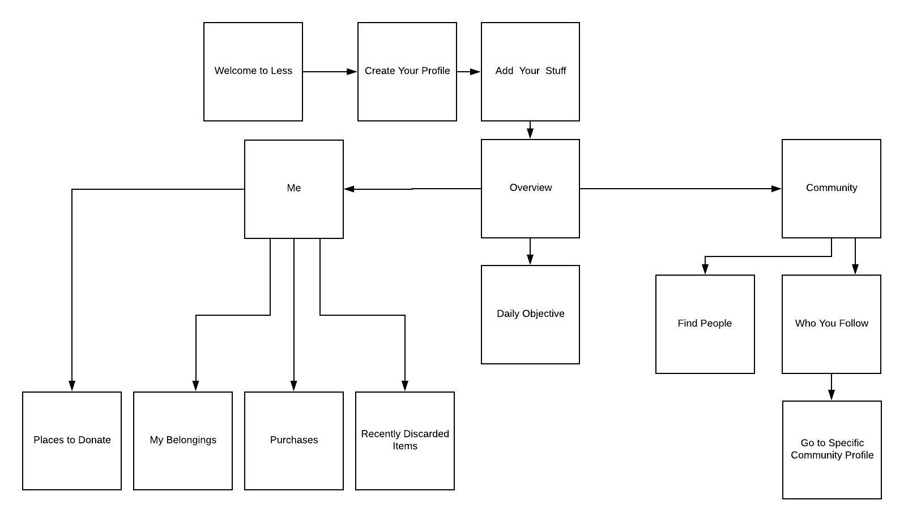
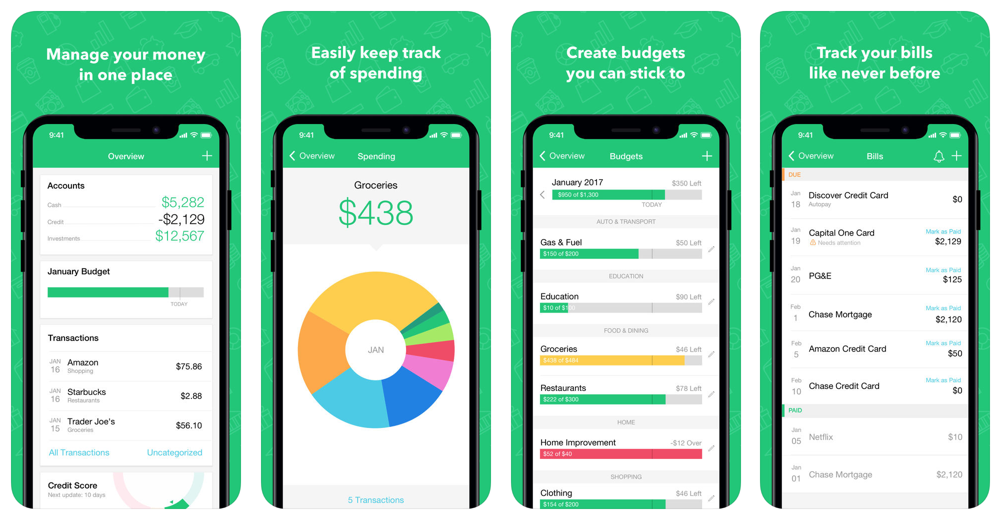
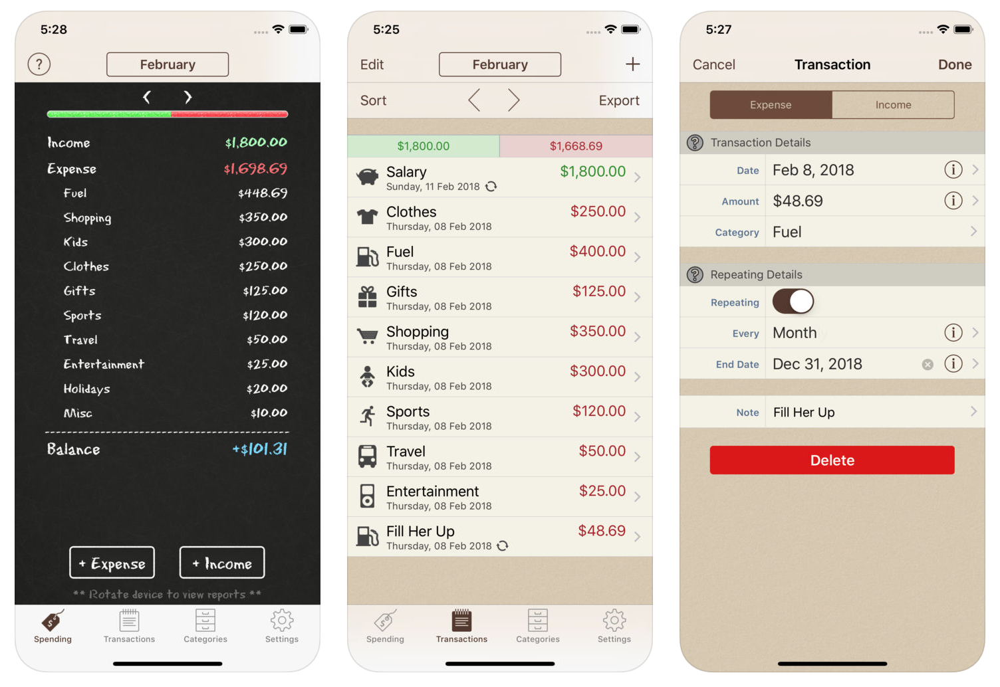
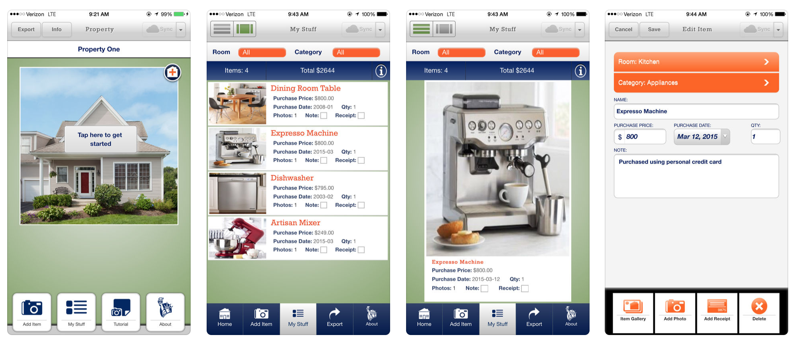
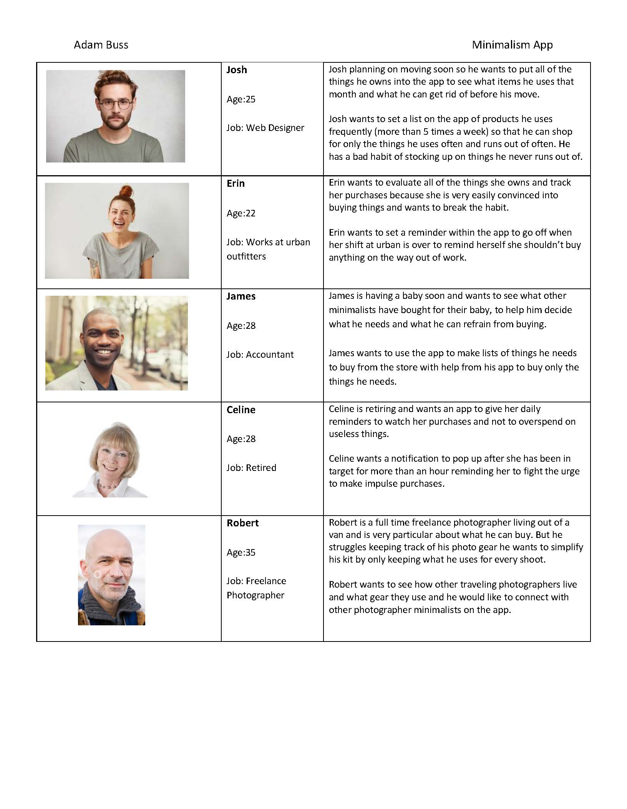
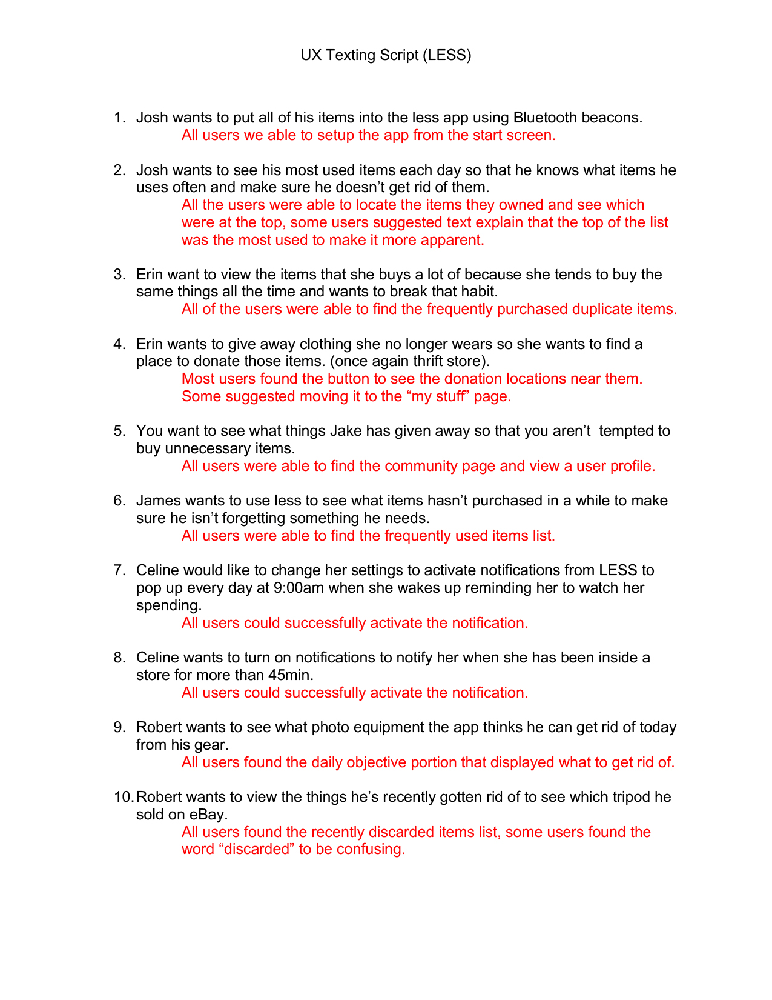

☰

App Summary
Less is an app that tracks the things you own/use and provides information on what items you can simplify out of your life. Less allows you to input and track your things everyday and also how often you use or interact with the things you own.
App Process Flow

Competing App Research
The only apps that seemed to be competing in the same space as Less were "Mint" and "Spending Tracker." Both of these apps were more focused on tracking the things you were purchasing rather than evaluating the things that you currently own and whether or not you need all the things you have. The mint app was well designed and thought out but the spending tracker app looked out of date and clunky. The Liberty Mutual Home gallery was an app I found that allows you to take inventory of the things you own in your home. But it doesn't do anything with the information you input other than store it for insurance purposes.



Potential User Personas
I then created potential user personas for the
Less application to better understand how people would use the app. I thought about key features each one of these users might need and what they would be using the app for.

Wireframes
I first started with roughly sketched wireframes of the potential layout of my app and revised the process flow. Then Using UX Pin I created interactive wire frames of my app design. I then had two rounds of user testing to find any problems or issues with the app before moving to fully designed invision mockups.
Initial Wireframe Sketches


UX Pin Mobile Wireframe Video
UX Pin Mobile Wireframe
Invison Mockups
Using Invision I created interactive mockups of the Less app with my revisions from the intial user testing of the wireframes. I used this interactive mockup app to conduct user testing on the new design and layout.
Invison Mockup Mobile Video
Invison Mockup Mobile
User Testing Outcomes
